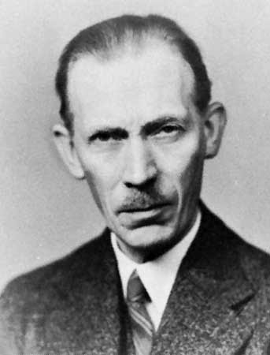

JOHANNES NICOLAUS BRONSTED

Introduction
Johannes Nicolaus Bronsted was a Danish physical chemist, best known for his theory of acids and bases similar to that of Thomas Martin Lowry of England. Though they had independently deduced the theory, it is now commonly known as Bronsted-Lowry theory. It defines acids, as proton donates to bases in an acid/base reaction. Johannes Nicolaus Brønsted was also regarded as a master on the catalytic properties and strengths of acids and bases.
About Bronsted
Johannes Nicolaus Bronsted was born on February 22, 1879 in Varde, Denmark. He earned a degree in chemical engineering in 1899 and his Ph.D. in 1908 from the University of Copenhagen and was immediately thereafter appointed professor of inorganic and physical chemistry at the same university.
In 1906 he published the first of his many papers on electron affinity, and, simultaneously with the English chemist Thomas Martin Lowry, he introduced the protonic theory of acid-base reactions in 1923. That same year, Gilbert N. Lewis proposed an electronic theory of acid-base reactions, but both theories remain commonly used.
Bronsted's Work
He became known as an authority on catalysis by acids and bases and was the namesake of the Brønsted catalysis equation.[citation needed] Working with Lowry, he also developed the often-used theory of proton donation, theorizing that a hydrogen atom (which is always found in an acid) ionizes into hydronium upon dissolving in water, thereby losing its electron and becoming a proton donor, and that hydroxide (a water molecule stripped of one of its two hydrogen atoms) is a proton receiver. Mixing the two causes a neutralization reaction wherein hydronium and hydroxide combine, creating hydrogen hydroxide, a compound otherwise known as water. The pH scale may be interpreted as "power of hydrogen", and the definition is based on the work of Brønsted and Lowry.
In World War II, Brønsted's opposition to the Nazis led to his election to the Danish parliament in 1947, but he was too ill to take his seat and died shortly after the election.